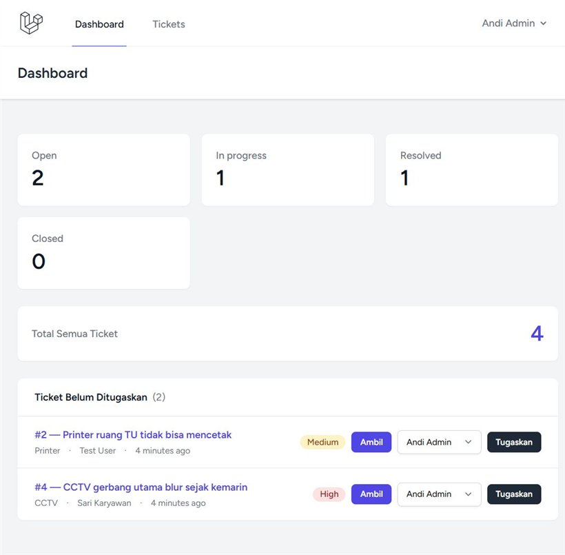
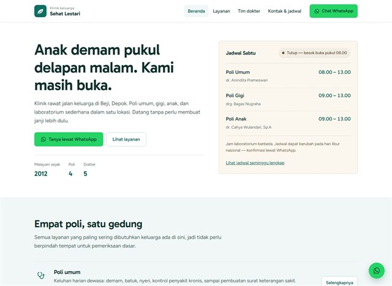
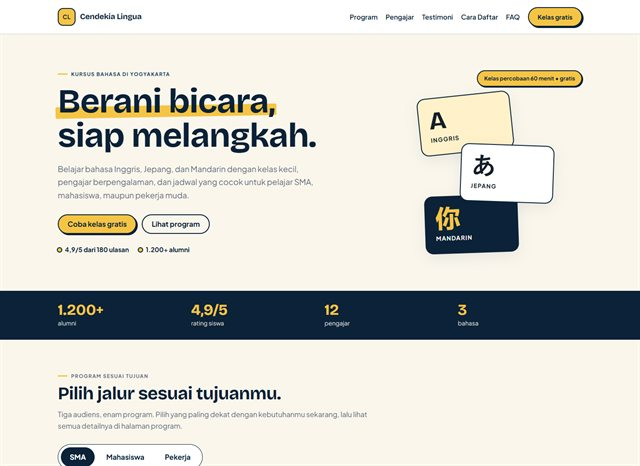
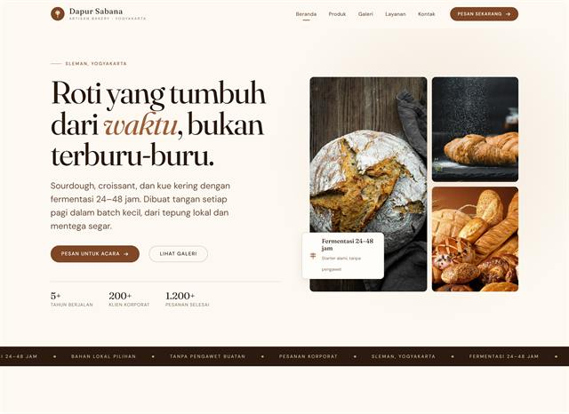
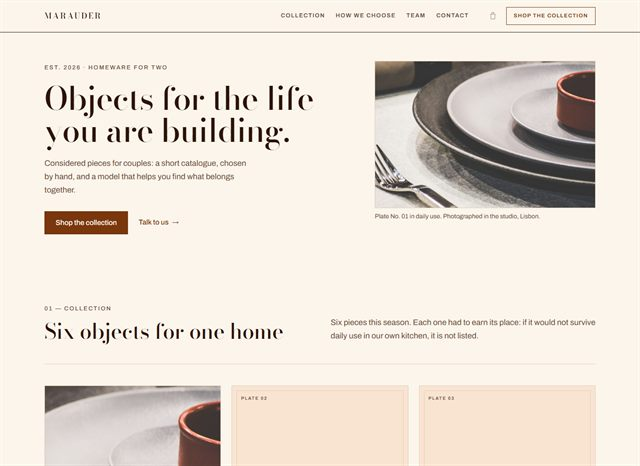
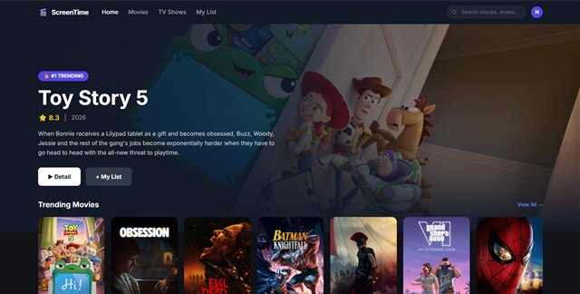
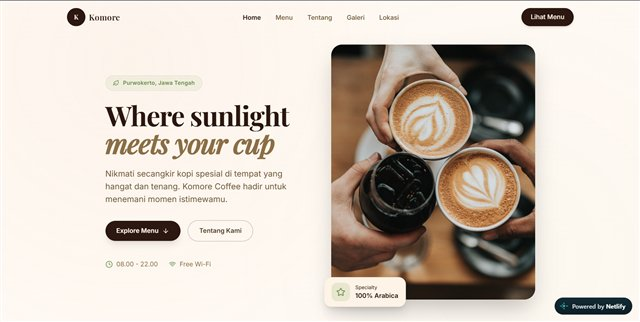
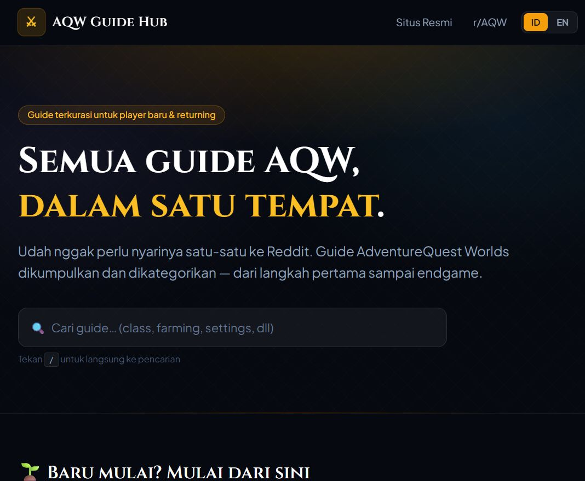

IT Support & Web Developer
Lulusan D4 Teknologi Rekayasa Komputer Polines (IPK 3.34). Terbiasa turun tangan menangani jaringan, CCTV, dan hardware — lalu membangun aplikasi web dengan Laravel, PHP, dan MySQL.
Tentang
// dari lapangan ke editorSaya mulai dari masalah yang paling nyata: Wi-Fi mati di asrama, CCTV yang perlu dirawat, dan lab komputer yang harus siap dipakai. Dari situ saya belajar bahwa teknologi bagus adalah yang menyelesaikan pekerjaan orang.
Sekarang saya membangun aplikasi web dengan Laravel — dari sistem tiket internal untuk mencatat gangguan IT, sampai aplikasi yang memakai API pihak ketiga. Saya peduli pada authorization, validasi, dan test, karena aplikasi yang dipakai sehari-hari harus bisa dipercaya.
IT Support Intern
- Maintenance Wi-Fi sekolah & asrama
- Instalasi jalur stop kontak lab komputer
- Maintenance & troubleshooting CCTV
Teknologi Rekayasa Komputer
- IPK 3.34 / 4.00
Proyek
// 8 terpilih dari beberapa
IT Ticketing System
Helpdesk internal untuk mencatat gangguan IT. Tiga role dengan Laravel Policy, alur status open → in progress → resolved → closed, komentar publik vs internal, audit log, dan 92 automated test.

Klinik Sehat Lestari
Company profile klinik keluarga dengan empat halaman, jadwal dokter yang dihitung otomatis, peta lokasi, dan tombol WhatsApp yang selalu terlihat. Data dokter dan nomor telepon sengaja fiktif karena ini mockup.

Cendekia Lingua
Company profile kursus bahasa dengan tab audiens, katalog program, form demo tervalidasi, wireframe 1440/390, style guide, dan sembilan PNG untuk Figma. Semua data fiktif.

Dapur Sabana
Website empat halaman untuk bakery artisan fiktif: katalog produk, galeri dengan filter kategori dan lightbox, paket layanan, serta form demo. Foto Unsplash, data dan testimoni fiktif.

Marauder
Storefront homeware fiktif dengan sepuluh halaman: katalog enam produk, form demo, halaman terms, dan 404 kustom. CSP di setiap halaman, audit keamanan pre-launch, serta GitHub Actions yang menahan deploy kalau check gagal.

ScreenTime
Watchlist film & anime dengan TMDB API, autentikasi, dan rekomendasi personal.

Komore Coffee
Website promosi cafe dengan menu interaktif, galeri suasana, dan layout responsif.

AQW Guide Hub
Agregator 19 guide game dengan rangkuman dua bahasa dan pencarian instan.